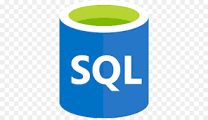

JavaScript
JavaScript (qui est souvent abrégé en « JS ») est un langage de script léger, orienté objet, principalement connu comme le langage de script des pages web.
C'est un langage à objets utilisant le concept de prototype, disposant d'un typage faible et dynamique qui permet de programmer suivant plusieurs paradigmes de programmation :
fonctionnelle, impérative et orientée objet.

CSS
Cascading Style Sheets (CSS) est un langage de feuille de style utilisé pour décrire la présentation d'un document écrit en HTML ou en XML (on inclut ici les langages basés sur XML comme SVG ou XHTML). CSS décrit la façon dont les éléments doivent être affichés à l'écran, sur du papier, en vocalisation, ou sur d'autres supports.
Bootstrap
Cascading Style Sheets (CSS) est un langage de feuille de style utilisé pour décrire la présentation d'un document écrit en HTML ou en XML (on inclut ici les langages basés sur XML comme SVG ou XHTML). CSS décrit la façon dont les éléments doivent être affichés à l'écran, sur du papier, en vocalisation, ou sur d'autres supports.
Java
Java est un langage de programmation orienté objet créé par James Gosling et Patrick Naughton, employés de Sun Microsystems, avec le soutien de Bill Joy (cofondateur de Sun Microsystems en 1982), présenté officiellement le 23 mai 1995 au SunWorld. La société Sun a été ensuite rachetée en 2009 par la société Oracle qui détient et maintient désormais Java. Une particularité de Java est que les logiciels écrits dans ce langage sont compilés vers une représentation binaire intermédiaire qui peut être exécutée dans une machine virtuelle Java (JVM) en faisant abstraction du système d'exploitation.

SQL
Le SQL (Structured Query Language) est un langage permettant de communiquer avec une base de données. Ce langage informatique est notamment très utilisé par les développeurs web pour communiquer avec les données d’un site web. SQL.sh recense des cours de SQL et des explications sur les principales commandes pour lire, insérer, modifier et supprimer des données dans une base.
HTML
HTML signifie « HyperText Markup Language » qu'on peut traduire par « langage de balises pour l'hypertexte ». HTML fonctionne grâce à des « balises » qui sont insérées au sein d'un texte normal. Il est utilisé afin de créer et de représenter le contenu d'une page web et sa structure. Ce contenu est balisé par des éléments HTML comme head, title, body, header, footer,p, div, span, img et bien d'autres. HTML permet d'inclure des images et d'autres contenus dans les pages web. Grâce à HTML, chacun peut créer des sites web aussi bien statiques que dynamiques. HTML est le langage qui permet de décrire la structure et le contenu d'un document web.